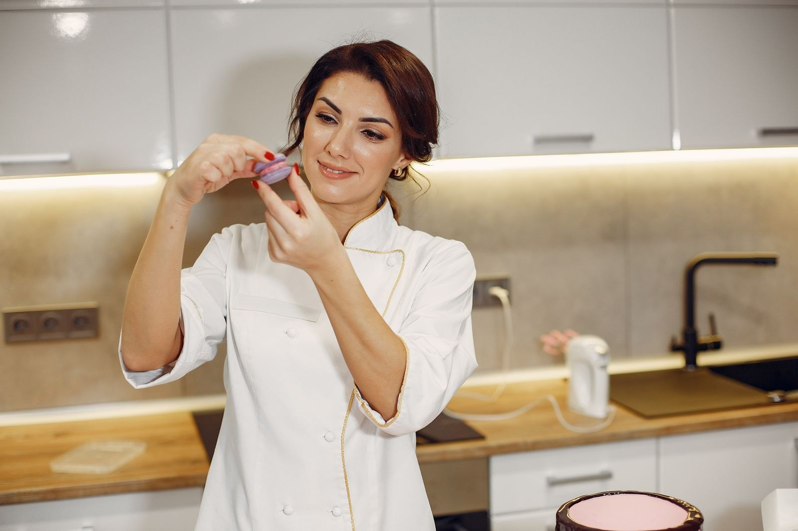

Ciao! Sono Marta, fornaia e sognatrice dietro al Forno Rosmarì. Tutto è cominciato con qualche ciambellone per gli amici, e oggi è un angolo caldo dove ogni ricetta racconta una storia.
Il mio obiettivo è portare un po' di felicità nella tua giornata, un cornetto alla volta. Qui tutto è fatto con ingredienti veri, passione e tanto cuore.